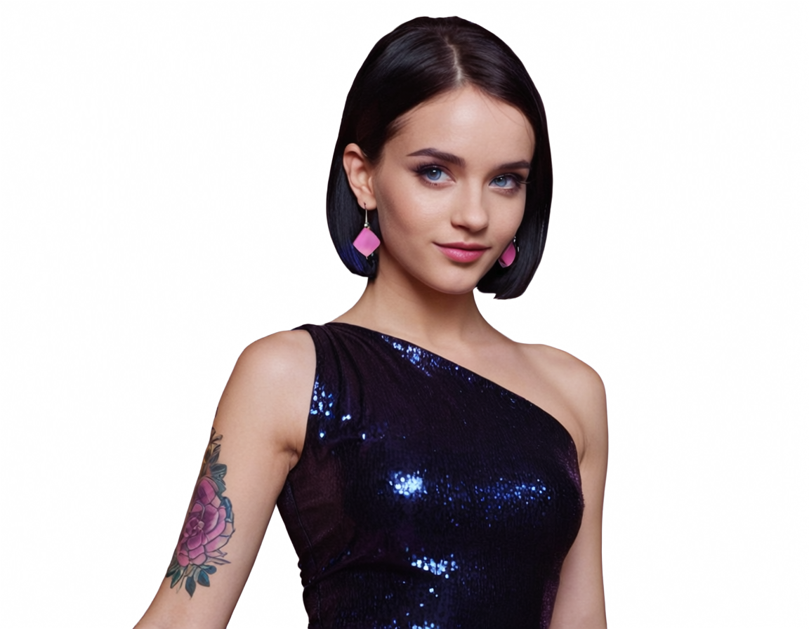
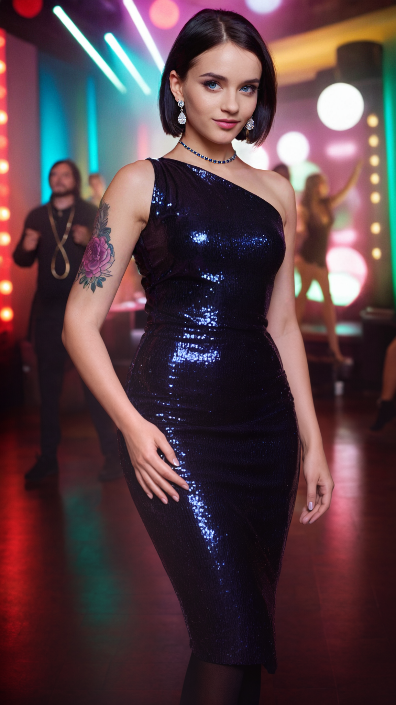

01 / SOURCE
Original Portrait
The starting image establishes the subject's face, hairstyle, tattoo, and one-shoulder sequined dress.
A five-stage ComfyUI image-editing experiment. Starting with a single portrait, the scene evolves through background removal, targeted accessory and environment edits, vertical outpainting, and a final wide-angle nightclub expansion.
The starting image establishes the subject's face, hairstyle, tattoo, and one-shoulder sequined dress.

The original environment is removed, isolating the subject for subsequent compositing and image edits.
A colorful nightclub replaces the backdrop. Earrings are changed and a necklace is added while maintaining the subject's recognizable appearance.

The portrait is extended downward to reveal more of the dress and body, with the club lighting and perspective continuing naturally.

The canvas expands into a cinematic wide shot. AI generates the surrounding dance floor, partygoers, lighting, and architectural details.
Workflow focus: subject preservation, background removal, localized accessory editing, vertical character extension, and environment outpainting. Generated with ComfyUI and Qwen-based image editing.